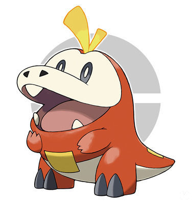
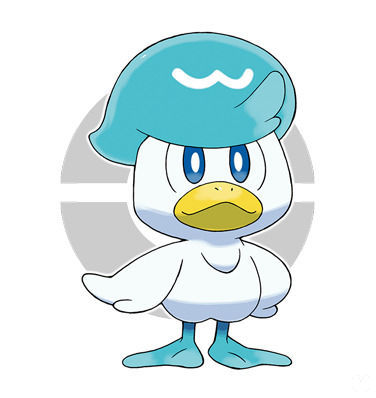

El pokemon fuegodrilo tiene un caracter apacible y hace las cosas a su ritmo.
- Tipo: fuego.
- Categoria: pokemon fuegodrilo.
- Altura: 0,4 m.
- Peso: 9,8 kg.
- Habilidad: Mar llamas.

El pokemon gato planta es caprichoso y adora ser el centro de atencion.
- Tipo: planta.
- Categoria: pokemon gato planta.
- Altura: 0,4 m.
- Peso: 4,1 kg.
- Habilidad: Espesura.

El pokemon es serio y adora la pulcritud.
- Tipo: agua.
- Categoria: pokemon patito.
- Altura: 0,5 m.
- Peso: 6,1 kg.
- Habilidad: Torrente.